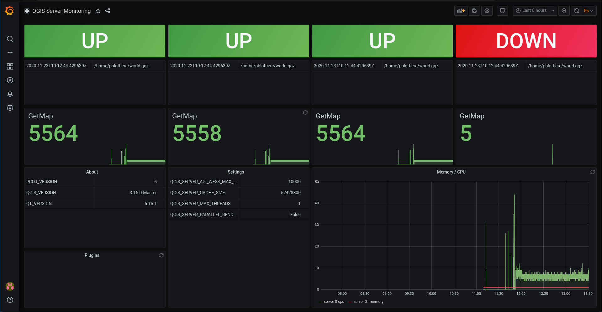

QGIS Server Enhancement Proposals: achievements and perspectives
Paul Blottiere
QCooperative
24-11-2020


Who?
- Paul Blottiere
- Lead Software Engineer
- QGIS server and core developer
- QCooperative member
QCooperative
- Broad range of GIS services
- Open Source ethics
- International
- Active members of the QGIS community

QS(erver)EPs
- Recent work
- (foreseeable) futur

Recent work
Improve QGIS project loading time
- QEP #191 by René-Luc D'Hont and David Marteau (3Liz)
- Achievements:
- Improve the trust mechanism
- New environment variable to disable layouts

Documentation
- QEP #184 by Julien Cabieces and Benoit de Mezzo (Oslandia)
- Achievements:
- https://docs.qgis.org/3.16/en/docs/server_manual/index.html
- Improve completeness and add new contents (deployment, ...)

End user experience
- QEP #192 by Alessandro Pasotti (QCooperative)
- Simple project catalog and webgis browser out-of the box

Continuous integration and OGC certification
- QEP #175 by /me (QCooperative)
- Achievements:
- pyogctest: Python tool to run OGC tests for WMS 1.3.0 in command line
- Integrated in QGIS continuous integration mechanism to avoid regressions
QGIS Server and performance monitoring
- QEP #185 by /me (QCooperative)
- Achievements:
- New scenarios
- Anomalies detection
- Up-to-date releases
- Preliminary results: QGIS 3.X is faster than QGIS 2.18 in most cases!

(foreseeable) futur
QGIS-Server-PerfSuite improvements
- Marco Bernasocchi (OPENGIS.ch) and /me (QCooperative)
- A lot of new scenarios
- GetFeatureInfo
- Bigger images and larger project
- Categorised and rule based renderer
- A report with "tips and tricks" to improve performances will come in time

WMS with Time dimension
- QEP #195 by Alessandro Pasotti (QCooperative)
- Goal
- Expose several individual layers as a single temporally enabled layer
- In compliance with the "OGC Best Practice for using Web Map Services (WMS) with Time-Dependent or Elevation-Dependent Data" document
- For GetCapabilities and GetMap requests
Shared cache
- QEP #??? by Alessandro Pasotti and /me (QCooperative)
- Cloud environment with multiple QGIS Server instances
- Reduce startup time by sharing information between processes
- A long standing discussion

On the fly configuration
- QEP #190 by /me (QCooperative)
- How to configure QGIS Server instances on-the-fly (without restarting)?
- Needs:
- Reload a project
- Deactivate/reload a plugin
- Update the configuration
- ...
Avoid restarting the whole infrastructure (may be long/improve uptime)!
Monitoring
- QEP #193 by /me (QCooperative)
- Get an insight of the state of QGIS server
- Handling several QGIS Server instances
Monitoring - POC

Monitoring - POC
Thanks